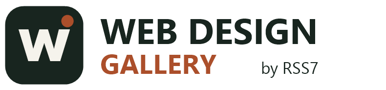

01 フルスクリーンメニュー
メニューを押すと画面いっぱいに案内が現れます。スマホでも行き先を選びやすい見せ方です。

専門用語が分からなくても大丈夫。ホームページの「動き」と「見せ方」を実際に試しながら、好きな雰囲気を見つけられるギャラリーです。
動きを見てみる ↗特設ページ：3つのAIでつくる制作ワークフロー同じブリーフから3案をつくり、比べて、良い部分だけを選んで1つにする流れを紹介しています。下のカードは小さな体験見本です。各演出は必要な場所にだけ使うのが基本。動きすぎず、読みやすさと表示速度を優先します。
メニューを押すと画面いっぱいに案内が現れます。スマホでも行き先を選びやすい見せ方です。
最初は背景に溶け込み、スクロール後は読みやすい色に切り替わる上部メニューです。
ページを下に読むと、見出しや文章がふわっと登場。情報の流れが自然になります。
写真がカーテンを開くように現れます。住宅、商品、施工事例の紹介におすすめ。
ページの読み進み具合が細い線で分かります。長い記事や案内ページに便利。
短いメッセージを横にゆっくり流します。ブランド名やコンセプトの演出に。
ボタンに触れると少し浮き上がり、クリックできることを自然に知らせます。
リンクにカーソルを合わせると下線が伸びます。控えめで上質な動きです。
見本はクリック・タップ・スワイプで操作できます。すべての演出を同時採用するのではなく、サイトに合うものを選びます。
質問を押すと回答が開きます。よくある質問をすっきりまとめます。
内容に合わせてお見積もりします。
スマホで横にスワイプして施工事例や作品を見られます。
スライダーを動かすと、施工前と施工後を比較できます。
数字を段階的に見せ、実績に視線を集めます。
情報を整理して、読みたい内容だけ表示します。
見た目と使いやすさを大切にします。
ボタンを押すと画面中央に詳しい内容が開きます。
住所やURLをワンタッチでコピーし、結果を表示します。
画面の明るさの雰囲気をボタンで切り替えられます。
カテゴリを選ぶと必要な項目だけが並びます。
企業サイト 店舗サイト ブログ
入力漏れをその場で伝え、問い合わせ時のミスを減らします。
写真に触れると少しだけ拡大し、印象的に見せます。
重要な一文が蛍光ペンのように強調されます。
押せることを自然に知らせる、控えめな矢印の動きです。
線で描かれたマークが少しずつ完成します。
長文を短く表示し、読みたい人だけ全文を開けます。
写真重視と文章重視の表示を切り替えられます。
申し込みの流れが何段階目か分かります。
完了メッセージが画面内に短く現れます。
今見ている場所を示し、長いページでも迷いにくくします。
新着や受付中を控えめなラベルで伝えます。
スマホの画面下などに相談ボタンを固定できます。
読み込み中も画面がガタつかないように表示枠を確保します。
ゆっくり流れる細かな粒が、マウスや指先に反応。自然な動きのパーティクルを、専用ページで実際に操作できます。
パーティクルを体験する ↗今日制作したオーバーレイ、スクロール、写真の見せ方をまとめた元の試作品も、そのまま保存しています。制作を依頼するときは、好きな演出番号を伝えてください。
元のデザインを見る ↗